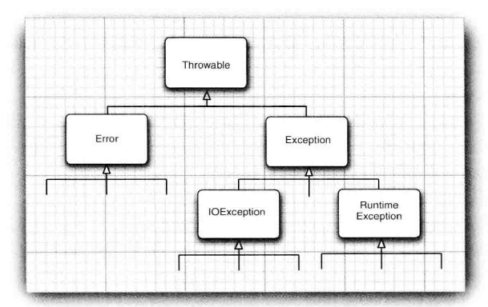

第7章 异常、断言和日志
7.1 处理错误
7.1.1 异常分类

- Error类：Java运行时系统的内部错误和资源耗尽错误。应用程序不应该抛出。
- Exception类：
- RuntimeException：由于程序错误导致的异常。有以下情况
- 错误的类型转换。
- 数组访问越界。
- 访问null指针。
- IOException：程序本身没有问题，但由于像I/O错误这类问题导致的异常属于其他异常。
- 试图在文件尾部后面读取数据。
- 试图打开一个不存在的文件。
- 试图根据给定的字符串查找Class对象，而这个字符串表示的类并不存在。
“如果出现RuntimeException异常，那一定就是你的问题”是一条相当有道理的规则。
Java语言规范将派生于Error类或RuntimeException类的所有异常称为非受查异常，所有其他的异常称为受查异常。编译器将核查是否为所有的受查异常提供了异常处理器。
7.1.2 声明受查异常
如果遇到了无法处理的情况，那么Java的方法可以抛出一个异常。一个方法不仅需要告诉编译器将要返回什么值，还要告诉编译器有可能发生什么错误。
方法应该在其首部声明所有可能抛出的异常。
1 | public FileInputStream(String name) throws FileNotFoundException |
在下面4种情况下应该抛出异常：
- 调用一个抛出受查异常的方法，例如，FileInputStream构造器。
- 程序运行过程中发现错误，并且利用throw语句抛出一个受查异常。
- 程序出现错误，例如，a[-1]=0会抛出一个ArrayIndexOutBoundsException这样的非受查异常。
- Java虚拟机和运行库出现的内部错误。
7.1.3 如何抛出异常
对于一个已经存在的类，将其抛出步骤如下：
- 找到一个合适的异常类
- 创建这个类的一个对象
- 将对象抛出
7.2 捕获异常
7.2.1 捕获异常
要想捕获异常，必须设置try/catch语句块，如果在try语句块中的任何代码抛出了一个在catch子句中说明的异常类，那么：
- 程序将跳过try语句块的其余代码。
- 程序将执行catch子句中的处理器代买。
传递异常：在方法声明后throws IOException。
应该捕获那些知道如何处理的异常，而将那些不知道怎样处理的异常继续进行传递。
7.2.4 finally子句
1 | InputStream in = new FileInputStream(...); |
以上代码，在3种情况下会执行finally子句：
代码没有抛出异常。
1
try-finally//执行1-2-5-6
抛出一个在catch子句中捕获的异常。
1
2try-catch-finally//执行1-3-4-5-6
//若catch子句抛出异常，异常会被抛回这个方法的调用者，执行1-3-5代码抛出一个异常但这个异常不是由catch子句捕获的。
1
try-finally//执行1-5
try语句可以只有finally子句，没有catch子句。
7.2.5 带资源的try语句
带资源的try语句最简形式为：
1 | try (Resource res = ...) |
try块退出时，会自动调用res.close()。
7.3 使用异常机制的技巧
异常处理不能代替简单的测试
与执行简单的测试相比，捕获异常所花费的世间大大超过了前者，使用异常的基本规则是：只在异常情况下使用异常机制。
不要过分细化异常
利用异常层次结构
不要只抛出RuntimeException异常。应该寻找更加适当的子类或创建自己的异常类。
不要只捕获Thowable异常，否则会使代码更难读、更难维护。‘
考虑受查异常和非受查异常的区别。已检查异常本来就很庞大，不要为逻辑错误抛出这些异常。
不要压制异常
书上这里看不懂，不知道在讲什么。
网上查阅结果：
不要在catch子句中压制异常（例如在子句中return null），如果不知道如何处理异常，最好将异常重新抛出，由上层决定如何处理异常。
在检测错误时，“苛刻”要比放任更好
不要羞于传递异常
注：最后两条归纳为早抛出，晚捕获“
7.4 使用断言
在一个具有自我保护能力的程序中，断言很常用。
断言机制允许在测试期间向代码中插入一些检查语句。当代码发布时，这些插入的检测语句会被自动移走。
Java语言引入了关键字assert。这个关键字有两种形式：
1 | assert 条件; |
如果结果为false，则抛出一个AssertionError异常。第二种形式中，表达式将被传入AssertionError的构造器，并转换成一个消息字符串。
1 | //以下代码断言x是一个非负数值 |
7.4.2 启用和禁用断言
在默认情况下，断言被禁用。可以在运行程序时用-enableassertions或-ea选项启用。
7.4.3 使用断言完成参数检查
在Java语言中，给出了3种处理系统错误的机制：
- 抛出一个异常
- 日志
- 使用断言
使用断言要注意以下几点：
- 断言失败是致命的、不可恢复的错误。
- 断言检查只用于开发和测阶段。
7.5 记录日志
记录日志API的优点：
- 可以很容易地取消全部日志记录，或者仅仅取消某个级别的日志，而且打开和关闭这个操作也很容易。
- 可以很简单地禁止日志记录地输出，因此，将这些日志代码留在程序中开销很小。
- 日志记录可以被定向到不同的处理器，用于在控制台显示，用于存储在文件中等。
- 日志记录器和处理器都可以对日志进行过滤。过滤器可以根据过滤实现器制定的标准丢弃那些无用地记录项。
- 日志记录可以采用不同的方法格式化，例如，纯文本或XML。
- 应用程序可以使用多个日志记录器，它们使用类似包名地这种具有层次结构的名字。
- 在默认情况下，日志系统的配置由配置文件控制。如果需要的话，应用程序可以替换这个配置。
7.5.2 高级日志
调用getLogger方法创建或获取记录器：
1 | private static final Logger myLogger = Logger.getLogger("com.mycompany.myapp"); |
日志记录器有7个级别：
- SEVERE
- WARNING
- INFO
- CONFIG
- FINE
- FINER
- FINEST
1 | logger.setLevel(Level.FINE);//FINE和更高级别的记录都可以记录下来。 |
7.5.8 日志记录说明
以下是一些最常用的操作：
- 为一个简单的应用程序，选择一个日志记录器，并把日志记录器命名为与主应用程序包一样的名字，这是一种好的编程习惯。
- 默认的日志配置将级别等于或高于INFO级别的所有消息记录到控制台。用户可以覆盖默认的配置文件。但改变需要做相当多的工作，因此，最好在应用程序中安装一个更加适宜的默认配置。
- 由于等于或高于INFO级别的消息都显示在控制台上，最好只将对程序用户有意义的消息设置为这几个级别，将程序员想要的日志记录设定为FINE是一个很好的选择。
7.6 调试技巧
可以用下面的方法打印或记录任意变量的值：
1
2
3System.out.println("x=" + x);
//或
Logger.getGlobal().info("x=" + x);若x是一个数值，则会被转换成等价的字符串。若x是一个对象，则Java会调用这个对象的toString方法。
一个有效技巧是在每一个类中放置一个单独的main方法，用以对每个类进行单元测试。
JUnit是一个非常常见的单元测试框架。
日志代理是一个子类的对象，它可以截获方法调用，并进行日志记录，然后调用超类中的方法。
利用Throwable类提供的printStackTrace方法，可以从任何一个异常对象中获得堆栈情况。
一般来说，堆栈轨迹显示在System.err上。也可以利用printStackTrace(PrintWriter s)方法将它发送到一个文件中。
后续省略。